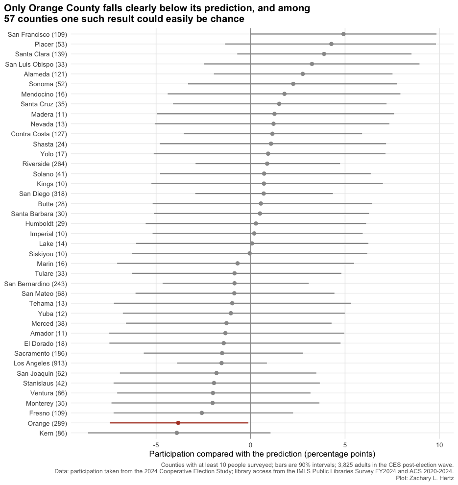

Validating an area score with a multilevel model
Source:vignettes/validation-mlm.Rmd
validation-mlm.RmdAn index of civic opportunity is only useful if it predicts what people do. This vignette shows one way to check that. It links survey respondents to an area score, asks whether the score predicts civic participation, and then looks for the places where the prediction is furthest off. The two steps follow a common validation design: first, a model that links each respondent’s area score to participation and tests whether access to a “civic home” changes that link; second, how far each place sits above or below that model’s prediction, used to flag communities the index mispredicts.
This is a demonstration of method on public data. The area score, the survey and the moderator are all stand-ins, and the results are not findings about California.
The area score: library access by county
The area score is young adults’ access to public libraries, from
vignette("library-access"). That vignette scores every
California tract with the enhanced two-step floating catchment area
method (E2SFCA). E2SFCA credits a tract with the capacity of libraries
within reach, discounted by distance, and divides each library’s
capacity among everyone who could use it. Capacity is annual public
service hours, demand is residents aged 18 to 29, and the catchment is
10 km. The code below repeats those steps without the commentary.
pls_url <- "https://www.imls.gov/sites/default/files/2026-06/pls_fy2024_csv.zip"
pls_zip <- file.path(tempdir(), basename(pls_url))
download.file(pls_url, pls_zip, mode = "wb", quiet = TRUE)
libraries <- read.csv(unz(pls_zip, "CSV/pls_fy24_outlet_pud24i.csv")) |>
filter(STABR == "CA", C_OUT_TY %in% c("CE", "BR"), HOURS > 0) |>
transmute(outlet = paste(FSCSKEY, FSCS_SEQ, sep = "-"), hours = HOURS,
LONGITUD, LATITUDE) |>
st_as_sf(coords = c("LONGITUD", "LATITUDE"), crs = 4326) |>
st_transform(3310)
youth <- tidycensus::get_acs(
geography = "tract",
variables = sprintf("B01001_%03d", c(7:11, 31:35)),
state = "CA", year = 2024, survey = "acs5"
) |>
group_by(tract = GEOID) |>
summarise(youth = sum(estimate))
blocks <- tigris::blocks("CA", year = 2020, progress_bar = FALSE) |>
st_drop_geometry() |>
transmute(tract = substr(GEOID20, 1, 11), pop = POP20,
lon = as.numeric(INTPTLON20), lat = as.numeric(INTPTLAT20)) |>
st_as_sf(coords = c("lon", "lat"), crs = 4269) |>
st_transform(3310)
demand <- acc_centroids(blocks, tract, pop) |>
inner_join(youth, by = "tract", relationship = "one-to-one")
demand_df <- st_drop_geometry(demand)
costs <- acc_cost_matrix(demand, libraries, tract, outlet, max_cost = 10000)
tract_access <- acc_e2sfca(demand_df, libraries, costs, tract, youth,
outlet, hours, catchment = 10000) |>
mutate(hours_per_1k = 1000 * access) |>
left_join(select(demand_df, tract, youth), by = "tract",
relationship = "one-to-one")
nrow(tract_access)
#> [1] 9129The validation design links each respondent to the score of their own
tract. The survey used here, the Cooperative Election Study (CES),
reports only the respondent’s county. So the tract scores are rolled up
to counties with val_aggregate(), as a mean weighted by
each tract’s residents aged 18 to 29. A county score averages over
tracts with very different access, so this link is much coarser than a
tract link. With tract identifiers the same model runs on the tract
scores directly and val_aggregate() is not needed.
county_access <- tract_access |>
mutate(county = substr(tract, 1, 5)) |>
val_aggregate(county, hours_per_1k, youth)
youth_mean <- weighted.mean(county_access$hours_per_1k, county_access$youth)
youth_sd <- sqrt(weighted.mean((county_access$hours_per_1k - youth_mean)^2,
county_access$youth))
county_access <- county_access |>
mutate(access_z = (hours_per_1k - youth_mean) / youth_sd)
summary(county_access$hours_per_1k)
#> Min. 1st Qu. Median Mean 3rd Qu. Max.
#> 0.0 296.7 453.9 769.0 954.7 3889.2
c(youth_mean = youth_mean, youth_sd = youth_sd)
#> youth_mean youth_sd
#> 357.6981 163.8541
filter(county_access, hours_per_1k == 0)
#> # A tibble: 1 × 5
#> county hours_per_1k youth n_units access_z
#> <chr> <dbl> <dbl> <int> <dbl>
#> 1 06091 0 271 1 -2.18County scores are skewed: the median county scores 454 hours per
1,000 young adults and the highest 3,889. The high scores belong to
rural counties with few young adults, while most young Californians, and
most survey respondents, live in large counties with scores near the
median. So the score is standardized across young Californians rather
than across counties: each county counts in proportion to its residents
aged 18 to 29. An access_z of 0 is the access of the
average young Californian, 358 hours, and one unit is one standard
deviation of that distribution, 164 hours. Standardizing across counties
instead would put 0 far from where respondents live, and the model’s
main effects would describe a county with almost no respondents. 1
county has no library outlet with reported hours within 10 km of any of
its tracts and scores zero.
The survey: CES 2024
The CES 2024 Common Content is a national online survey of 60,000
adults, interviewed before the November 2024 election and again after
it. It is free from the CES Harvard Dataverse. This vignette reads only
the columns it needs from the CSV release, whose path is set in the
environment variable CES_2024_PATH. Every variable name and
code below was checked against the CES 2024 guide and against the counts
it tabulates.
ces_vars <- c("inputstate", "countyfips", "birthyr", "gender4", "educ",
"race", "pew_churatd", sprintf("CC24_430a_%d", 1:8))
ces <- data.table::fread(Sys.getenv("CES_2024_PATH"), select = ces_vars) |>
as_tibble()
ca <- filter(ces, inputstate == 6)
c(california = nrow(ca), post_wave = sum(!is.na(ca$CC24_430a_1)))
#> california post_wave
#> 4900 3873The participation items are in the post-election wave, so only
respondents who took it can be used. The question
(CC24_430a) asks: “During the past year did you … (Check
all that apply)”. Items 1 to 6 are political or civic acts: attend local
political meetings, put up a political sign, work for a candidate or
campaign, attend a political protest, march or demonstration, contact a
public official, and donate money to a candidate, campaign or political
organization. Item 7 (donate blood) is left out because it is not
political, and item 8 is “none of these”. Each item is coded 1 if
selected and 2 if not.
ca |>
filter(!is.na(CC24_430a_1)) |>
mutate(age_18_29 = 2024 - birthyr <= 29) |>
summarise(respondents = n(), counties = n_distinct(countyfips),
.by = age_18_29)
#> # A tibble: 2 × 3
#> age_18_29 respondents counties
#> <lgl> <int> <int>
#> 1 TRUE 371 37
#> 2 FALSE 3502 58The population of interest is adults aged 18 to 29, but only 371 California respondents in that age group took the post-election wave, too few to estimate a county-level slope and an interaction. The model therefore uses all California adults in the post-election wave and lets the access slope differ for those aged 18 to 29.
acts <- sprintf("CC24_430a_%d", 1:6)
respondents <- ca |>
filter(!is.na(CC24_430a_1)) |>
mutate(
county = if_else(is.na(countyfips), NA, sprintf("%05d", countyfips)),
age = 2024 - birthyr,
age_group = cut(age, c(17, 29, 44, 64, Inf),
labels = c("18-29", "30-44", "45-64", "65+")),
young = as.integer(age_group == "18-29"),
n_acts = rowSums(pick(all_of(acts)) == 1),
any_act = as.integer(n_acts > 0),
monthly = case_when(pew_churatd %in% 1:3 ~ 1L,
pew_churatd %in% 4:6 ~ 0L),
woman = as.integer(gender4 == 2),
college = as.integer(educ %in% 5:6),
race = factor(
case_when(race == 1 ~ "White", race == 2 ~ "Black",
race == 3 ~ "Hispanic", race == 4 ~ "Asian",
.default = "Other"),
levels = c("White", "Hispanic", "Asian", "Black", "Other")
)
)
n_dont_know <- sum(is.na(respondents$monthly))
n_no_county <- sum(is.na(respondents$county))
model_data <- respondents |>
filter(!is.na(monthly), !is.na(county)) |>
inner_join(select(county_access, county, hours_per_1k, access_z),
by = "county", relationship = "many-to-one")
county_n <- count(model_data, county)
# Counties with no respondents in the model.
setdiff(county_access$county, county_n$county)
#> [1] "06003"
c(
respondents = nrow(model_data),
aged_18_29 = sum(model_data$young),
counties = nrow(county_n),
counties_under_10 = sum(county_n$n < 10),
median_per_county = median(county_n$n),
any_act = mean(model_data$any_act),
monthly = mean(model_data$monthly)
)
#> respondents aged_18_29 counties counties_under_10 median_per_county
#> 3825.0000000 362.0000000 57.0000000 16.0000000 18.0000000
#> any_act monthly
#> 0.4332026 0.2250980The outcome any_act is 1 if the respondent did at least
one of the six acts in the past year. n_acts counts them,
from 0 to 6.
The moderator stands in for a “civic home”: an institution that
brings people into civic life. Here it is regular attendance at
religious services, from pew_churatd (“Aside from weddings
and funerals, how often do you attend religious services?”). Codes 1 to
3 (more than once a week, once a week, once or twice a month) count as
attending at least monthly, and codes 4 to 6 (a few times a year,
seldom, never) do not. The 47 respondents who answered “don’t know”
(code 7) are dropped. 1 respondent with no county code is dropped too.
Regular attendance is a proxy for a civic home. A congregation is one
kind of civic home, and many young adults who have one would not find it
in a church.
Controls are kept minimal: age group, gender (gender4 =
2 is a woman), a four-year degree or more (educ 5 or 6) and
race (race 1 White, 2 Black, 3 Hispanic, 4 Asian, other
codes grouped).
Step 1: does the area score predict participation?
A multilevel model is a regression whose observations are grouped, here respondents within counties, and which estimates how much the groups differ. Each county gets a random intercept: its own baseline level of participation, treated as a draw from a normal distribution whose spread the model estimates. This lets the model separate what the county score explains from other differences between counties, and it gives honest standard errors for a score that varies only between counties.
The model is a logistic regression with a random intercept for each
county. The terms of interest are access_z, the
standardized county library score; access_z:monthly, which
asks whether the link between access and participation differs for
regular attenders; and access_z:young, which lets the
access slope differ for adults aged 18 to 29.
fit <- lme4::glmer(
any_act ~ access_z * monthly + access_z:young + age_group + woman +
college + race + (1 | county),
data = model_data, family = binomial,
control = lme4::glmerControl(optimizer = "bobyqa")
)
coef_table <- function(fit) {
s <- summary(fit)$coefficients
tibble(term = rownames(s), estimate = s[, 1], std_error = s[, 2],
p_value = s[, 4])
}
coefs <- coef_table(fit)
knitr::kable(coefs, digits = 3)| term | estimate | std_error | p_value |
|---|---|---|---|
| (Intercept) | -0.841 | 0.139 | 0.000 |
| access_z | 0.042 | 0.032 | 0.188 |
| monthly | 0.150 | 0.082 | 0.067 |
| age_group30-44 | 0.041 | 0.140 | 0.772 |
| age_group45-64 | 0.284 | 0.130 | 0.028 |
| age_group65+ | 0.821 | 0.133 | 0.000 |
| woman | -0.089 | 0.069 | 0.197 |
| college | 0.760 | 0.072 | 0.000 |
| raceHispanic | -0.354 | 0.104 | 0.001 |
| raceAsian | -0.739 | 0.122 | 0.000 |
| raceBlack | -0.289 | 0.139 | 0.037 |
| raceOther | 0.106 | 0.121 | 0.379 |
| access_z:monthly | -0.042 | 0.078 | 0.596 |
| access_z:young | -0.024 | 0.145 | 0.869 |
Estimates are on the log-odds scale, with standard errors and p-values from the model’s Wald tests. The access slope for adults aged 30 and over who do not attend monthly is 0.042 (SE 0.032, p = 0.19). The interaction with monthly attendance is -0.042 (SE 0.078, p = 0.60), and the extra slope for adults aged 18 to 29 is -0.024 (SE 0.145, p = 0.87). The standard deviation of the county intercepts is 0.17 on the log-odds scale.
Power. The minimum detectable effect (MDE) is the smallest true effect a study would detect with 80 percent probability in a two-sided test at the 5 percent level. It is about 2.8 times the standard error. For the interaction it is 2.8 x 0.078 = 0.22 in log odds, an odds ratio of 1.25 per standard deviation of county access. At the sample’s participation rate of 43 percent, that is roughly 5 percentage points. A null here would rule out only interactions about that large. A county-average library score probably changes the gap between attenders and others by less than that, so a null would say little. The sample is 3,825 respondents in 57 counties, against more than 85,000 respondents linked by tract in the planned validation.
Survey weights. The model does not use the CES
weights. In a multilevel model, weights have to be split and rescaled by
level, and lme4’s weights argument treats them as precision
or trial counts rather than sampling weights, so passing them would
misstate the standard errors. The model instead conditions on age,
gender, education and race, the main variables the weights adjust
for.
The count version uses the same terms with a Poisson model for
n_acts:
fit_count <- lme4::glmer(
n_acts ~ access_z * monthly + access_z:young + age_group + woman +
college + race + (1 | county),
data = model_data, family = poisson,
control = lme4::glmerControl(optimizer = "bobyqa")
)
count_coefs <- coef_table(fit_count)
knitr::kable(count_coefs, digits = 3)| term | estimate | std_error | p_value |
|---|---|---|---|
| (Intercept) | -0.627 | 0.087 | 0.000 |
| access_z | 0.028 | 0.018 | 0.128 |
| monthly | 0.101 | 0.044 | 0.023 |
| age_group30-44 | -0.029 | 0.082 | 0.725 |
| age_group45-64 | 0.095 | 0.076 | 0.207 |
| age_group65+ | 0.352 | 0.076 | 0.000 |
| woman | -0.033 | 0.038 | 0.393 |
| college | 0.537 | 0.039 | 0.000 |
| raceHispanic | -0.248 | 0.062 | 0.000 |
| raceAsian | -0.676 | 0.077 | 0.000 |
| raceBlack | -0.317 | 0.084 | 0.000 |
| raceOther | 0.048 | 0.063 | 0.438 |
| access_z:monthly | -0.038 | 0.042 | 0.371 |
| access_z:young | 0.077 | 0.072 | 0.284 |
The count model’s interaction is -0.038 (SE 0.042, p = 0.37) on the log scale.
Step 2: which counties does the model mispredict?
The model also gives each county its own estimate: how much more or
less its residents take part than the rest of the model predicts from
their library access, age, gender, education and race. In the model this
is the county’s random intercept. val_group_effects()
returns each county’s estimate with its standard error and a 90 percent
interval, and flags counties whose interval excludes zero. Printed
tables in this vignette show only counties with at least 10 people
surveyed, so that no row reports the answers of one or a few people.
effects <- val_group_effects(fit, county, level = 0.9)
ca_counties <- tigris::counties("CA", cb = TRUE, year = 2020,
progress_bar = FALSE) |>
st_transform(3310) |>
select(county = GEOID, name = NAME)
effects <- effects |>
left_join(st_drop_geometry(ca_counties), by = "county",
relationship = "one-to-one")
n_flagged <- sum(effects$excludes_zero)
n_flagged
#> [1] 1
printable <- filter(effects, n >= 10)
bind_rows(head(printable, 5), tail(printable, 5)) |>
select(name, n, estimate, std_error, lower, upper, excludes_zero)
#> # A tibble: 10 × 7
#> name n estimate std_error lower upper excludes_zero
#> <chr> <int> <dbl> <dbl> <dbl> <dbl> <lgl>
#> 1 San Francisco 109 0.208 0.127 -0.00170 0.418 FALSE
#> 2 Placer 53 0.180 0.144 -0.0567 0.416 FALSE
#> 3 Santa Clara 139 0.169 0.121 -0.0309 0.368 FALSE
#> 4 San Luis Obispo 33 0.142 0.152 -0.108 0.391 FALSE
#> 5 Alameda 121 0.121 0.125 -0.0856 0.327 FALSE
#> 6 Stanislaus 42 -0.0858 0.149 -0.330 0.159 FALSE
#> 7 Monterey 35 -0.0898 0.152 -0.339 0.159 FALSE
#> 8 Fresno 109 -0.114 0.129 -0.326 0.0979 FALSE
#> 9 Orange 289 -0.169 0.0997 -0.333 -0.00514 TRUE
#> 10 Kern 86 -0.176 0.135 -0.399 0.0466 FALSEThe model’s county estimates are pulled toward zero, more strongly when a county has few respondents. This is called shrinkage. A county with three respondents can have a participation rate 30 points above the prediction by chance alone. Shrinkage weighs that against how much counties differ in general, and keeps such a county from being flagged because of noise.
A county estimate is on the model’s log-odds scale. To express it in percentage points, the vignette adds it to the predicted log odds of each respondent in the county, converts both to probabilities, and averages the difference over the county’s respondents.
Each dot in the figure below is one county, placed by how many people were surveyed there. The left panel shows the county’s own average: the share of its respondents who took part, minus the share the model predicts for people with their age, gender, education, race and library access. The right panel shows the multilevel model’s estimate for the same county, which leans on the statewide pattern when few people were surveyed, so the counties that look extreme on the left are pulled back to near zero on the right.
model_data <- model_data |>
mutate(eta_fixed = predict(fit, re.form = NA),
p_fixed = predict(fit, type = "response", re.form = NA),
p_full = fitted(fit))
compare <- model_data |>
summarise(n = n(),
own_average = 100 * mean(any_act - p_fixed),
model_estimate = 100 * mean(p_full - p_fixed),
.by = county) |>
left_join(st_drop_geometry(ca_counties), by = "county",
relationship = "one-to-one")
small <- filter(compare, n < 10)
# The three counties (of those with 10 or more respondents) where the model
# moves the estimate most.
compare |>
filter(n >= 10) |>
slice_max(abs(own_average - model_estimate), n = 3) |>
select(name, n, own_average, model_estimate)
#> # A tibble: 3 × 4
#> name n own_average model_estimate
#> <chr> <int> <dbl> <dbl>
#> 1 Amador 11 -19.7 -1.33
#> 2 Madera 11 18.7 1.27
#> 3 Mendocino 16 18.7 1.79
fig_caption <- function(first_line) {
paste(first_line,
paste("Data: participation taken from the 2024 Cooperative Election",
"Study; library access from the IMLS Public Libraries Survey",
"FY2024 and ACS 2020-2024."),
"Plot: Zachary L. Hertz", sep = "\n")
}
fig_theme <- theme_minimal(base_size = 11) +
theme(panel.grid.minor = element_blank(),
plot.title = element_text(face = "bold"),
plot.title.position = "plot",
plot.caption = element_text(hjust = 1, color = "gray40", size = 8),
plot.caption.position = "plot")
panel_names <- c("Each county's own average", "Multilevel model")
panels <- bind_rows(
mutate(compare, panel = panel_names[1], value = own_average),
mutate(compare, panel = panel_names[2], value = model_estimate)
) |>
mutate(panel = factor(panel, levels = panel_names))
ggplot(panels, aes(n, value)) +
geom_hline(yintercept = 0, color = "gray75", linewidth = 0.4) +
geom_point(color = "gray20", size = 1.8, alpha = 0.75) +
geom_segment(data = filter(panels, n == max(n)),
aes(xend = n, y = value - 2.5, yend = value - 8),
color = "gray50", linewidth = 0.3) +
geom_text(data = filter(panels, n == max(n)), aes(y = value - 9,
label = name),
vjust = 1, hjust = 1, size = 3.2, color = "gray20") +
facet_wrap(vars(panel)) +
scale_x_log10(breaks = c(1, 3, 10, 30, 100, 300, 1000),
labels = c("1", "3", "10", "30", "100", "300", "1,000"),
limits = c(1, 1000)) +
labs(
title = paste("The multilevel model shrinks small counties' extreme",
"averages toward the prediction"),
x = "People surveyed in the county",
y = "Participation compared with the\nprediction (percentage points)",
caption = fig_caption(paste0(
"Each dot is a California county; ", fmt(nrow(model_data)),
" adults in the CES post-election wave."))
) +
fig_theme +
theme(strip.text = element_text(hjust = 0, face = "bold", size = 11),
panel.spacing.x = unit(1.5, "lines"))
In the 16 counties with fewer than 10 people surveyed, the own averages run from -58 to 47 points, while the model’s estimates for the same counties stay between -1.2 and 0.6 points.
to_points <- function(b, eta) 100 * mean(plogis(eta + b) - plogis(eta))
ranking <- model_data |>
select(county, eta_fixed) |>
inner_join(select(effects, county, name, n, estimate, lower, upper,
excludes_zero),
by = "county", relationship = "many-to-one") |>
summarise(across(c(estimate, lower, upper), \(b) to_points(b, eta_fixed)),
.by = c(county, name, n, excludes_zero))
n_hidden <- sum(ranking$n < 10)
flagged <- filter(ranking, excludes_zero)The next figure ranks the counties by the model’s estimate, in percentage points. Each dot is a county’s estimate and each bar is its 90 percent interval, and a county counts as clearly above or below its prediction only when its whole bar sits on one side of zero. A county with few people surveyed has a wide bar that crosses zero, so the data cannot tell it apart from its prediction however far its dot sits from zero. The 16 counties with fewer than 10 people surveyed are left out of the figure because their bars are wide and their estimates sit near zero; none of them is flagged. Alpine County has no respondents and is not in the model.
shown <- ranking |>
filter(n >= 10) |>
mutate(label = reorder(
paste0(name, " (", format(n, big.mark = ",", trim = TRUE), ")"),
estimate
))
ggplot(shown, aes(x = estimate, y = label, color = excludes_zero)) +
geom_vline(xintercept = 0, color = "gray60", linewidth = 0.4) +
geom_linerange(aes(xmin = lower, xmax = upper), linewidth = 0.7) +
geom_point(size = 2) +
scale_color_manual(values = c(`TRUE` = "#b2432f", `FALSE` = "gray60"),
guide = "none") +
labs(
title = if (nrow(flagged) == 1) {
paste0("Only ", flagged$name, " County falls clearly ",
if (flagged$estimate < 0) "below" else "above",
" its prediction, and among\n", nrow(effects),
" counties one such result could easily be chance")
} else {
paste0(nrow(flagged), " of ", nrow(effects), " counties fall clearly ",
"above or below their prediction")
},
x = "Participation compared with the prediction (percentage points)",
y = NULL,
caption = fig_caption(paste0(
"Counties with at least 10 people surveyed; bars are 90% intervals; ",
fmt(nrow(model_data)), " adults in the CES post-election wave."))
) +
fig_theme +
theme(panel.grid.major.y = element_line(color = "gray94"))
What this shows
1 of 57 counties (Orange) is flagged at the 90 percent level. With 57 counties, a few flags are expected by chance, so a flag is a reason to look closer, not a finding. The counties that would anchor site selection in a real validation are the ones that stay flagged with tract-level scores, the full survey sample and a measured civic home. The point of this example is the workflow: aggregate a tract score to the level the survey identifies, fit the multilevel model, report each term with its uncertainty and power, and rank places by the model’s county estimates rather than by their own raw averages.